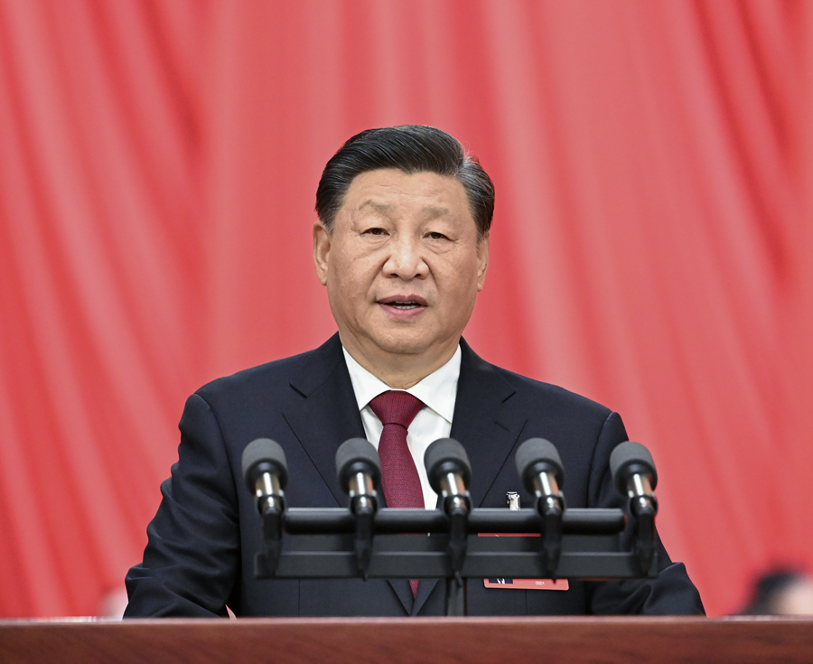

新华社北京10月16日电 凝心聚力擘画复兴新蓝图，团结奋进创造历史新伟业。举世瞩目的中国共产党第二十次全国代表大会16日上午在人民大会堂开幕。
习近平代表第十九届中央委员会向大会作了题为《高举中国特色社会主义伟大旗帜 为全面建设社会主义现代化国家而团结奋斗》的报告。 习近平指出，中国共产党第二十次全国代表大会，是在全党全国各族人民迈上全面建设社会主义现代化国家新征程、 向第二个百年奋斗目标进军的关键时刻召开的一次十分重要的大会。大会的主题是：高举中国特色社会主义伟大旗帜， 全面贯彻新时代中国特色社会主义思想，弘扬伟大建党精神，自信自强、守正创新，踔厉奋发、勇毅前行，为全面建设社会主义现代化国家、 全面推进中华民族伟大复兴而团结奋斗。
人民大会堂雄伟庄严，万人大礼堂气氛热烈。主席台上方悬挂着“中国共产党第二十次全国代表大会”的会标，后幕正中是镰刀和锤头组成的党徽，10面鲜艳的红旗分列两侧。二楼和三楼眺台上分别悬挂着“高举中国特色社会主义伟大旗帜，全面贯彻习近平新时代中国特色社会主义思想，弘扬伟大建党精神，为全面建设社会主义现代化国家、全面推进中华民族伟大复兴而团结奋斗！”“伟大、光荣、正确的中国共产党万岁！”的横幅。
在主席台前排就座的大会主席团常务委员会成员有习近平、李克强、栗战书、汪洋、王沪宁、赵乐际、韩正、丁薛祥、王晨、刘鹤、许其亮、孙春兰、李希、李强、李鸿忠、杨洁篪、杨晓渡、张又侠、陈希、陈全国、陈敏尔、胡春华、郭声琨、黄坤明、蔡奇、胡锦涛、李瑞环、温家宝、贾庆林、张德江、俞正声、宋平、李岚清、曾庆红、吴官正、李长春、贺国强、刘云山、张高丽、尤权、张庆黎。
大会由李克强主持。上午10时，会议开始。全场起立，高唱中华人民共和国国歌。随后，全体同志为毛泽东、周恩来、刘少奇、朱德、邓小平、陈云等已故老一辈无产阶级革命家和革命先烈默哀。
李克强宣布，党的二十大应出席代表2296人，特邀代表83人，共2379人，今天实到2340人。他对列席大会的党外朋友和有关方面负责同志表示热烈的欢迎。
习近平代表第十九届中央委员会向大会作的报告共分15个部分：一、过去五年的工作和新时代十年的伟大变革；二、开辟马克思主义中国化时代化新境界；三、新时代新征程中国共产党的使命任务；四、加快构建新发展格局，着力推动高质量发展；五、实施科教兴国战略，强化现代化建设人才支撑；六、发展全过程人民民主，保障人民当家作主；七、坚持全面依法治国，推进法治中国建设；八、推进文化自信自强，铸就社会主义文化新辉煌；九、增进民生福祉，提高人民生活品质；十、推动绿色发展，促进人与自然和谐共生；十一、推进国家安全体系和能力现代化，坚决维护国家安全和社会稳定；十二、实现建军一百年奋斗目标，开创国防和军队现代化新局面；十三、坚持和完善“一国两制”，推进祖国统一；十四、促进世界和平与发展，推动构建人类命运共同体；十五、坚定不移全面从严治党，深入推进新时代党的建设新的伟大工程。
习近平在报告中指出，十九大以来的五年，党中央统筹中华民族伟大复兴战略全局和世界百年未有之大变局，就党和国家事业发展作出重大战略部署，团结带领全党全军全国各族人民有效应对严峻复杂的国际形势和接踵而至的巨大风险挑战，以奋发有为的精神把新时代中国特色社会主义不断推向前进。五年来，我们党团结带领人民，攻克了许多长期没有解决的难题，办成了许多事关长远的大事要事，推动党和国家事业取得举世瞩目的重大成就。
在总结新时代十年工作时，习近平指出，十年来，我们经历了对党和人民事业具有重大现实意义和深远历史意义的三件大事：一是迎来中国共产党成立一百周年，二是中国特色社会主义进入新时代，三是完成脱贫攻坚、全面建成小康社会的历史任务，实现第一个百年奋斗目标。这是中国共产党和中国人民团结奋斗赢得的历史性胜利，是彪炳中华民族发展史册的历史性胜利，也是对世界具有深远影响的历史性胜利。
习近平说，十年来党和国家事业取得历史性成就、发生历史性变革，推动我国迈上全面建设社会主义现代化国家新征程。创立了新时代中国特色社会主义思想，全面加强党的领导，实现了小康这个中华民族的千年梦想，对新时代党和国家事业发展作出科学完整的战略部署，提出并贯彻新发展理念，以巨大的政治勇气全面深化改革，实行更加积极主动的开放战略，坚持走中国特色社会主义政治发展道路，确立和坚持马克思主义在意识形态领域指导地位的根本制度，深入贯彻以人民为中心的发展思想，坚持绿水青山就是金山银山的理念，贯彻总体国家安全观，确立党在新时代的强军目标，全面准确推进“一国两制”实践，全面推进中国特色大国外交，深入推进全面从严治党。同时必须清醒看到，我们的工作还存在一些不足，面临不少困难和问题。